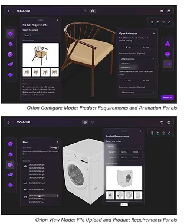
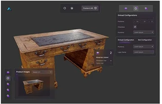
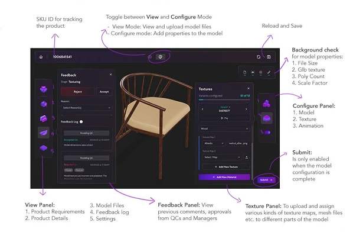
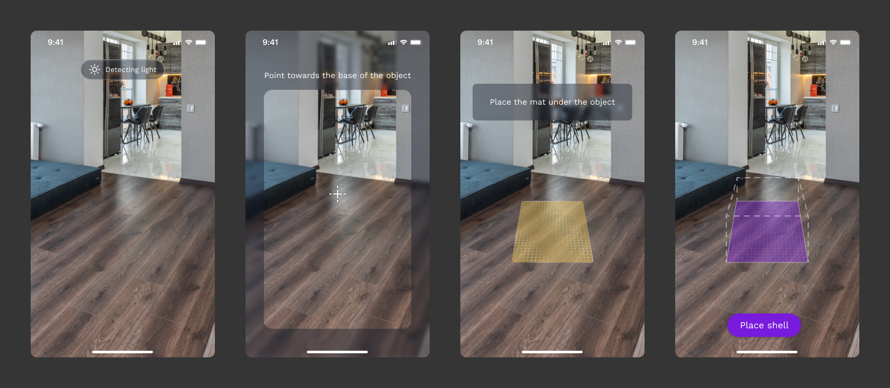
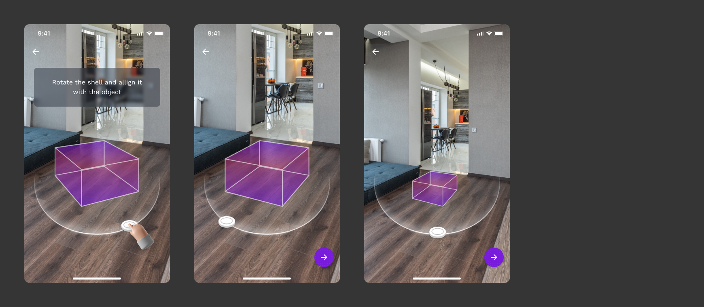

Three kinds of user, one model, and nowhere to work together.
Before a shopper can place a chair in their living room, three kinds of people meet it in Orion. 3D and texturing artists build and dress the model, QC checks it through eight levels of approval, and finally a customer, a potential buyer, views it in 3D or in their own space before deciding to buy. Orion had to serve the people making the model and the person buying it.
The other end of the pipeline had a different problem. Capture asked a seller, not a 3D expert, to walk around an object with a phone. In AR, the background of every screen is the real world, and it changes from room to room.
Not a bigger tool, but a workspace per role.
We started by learning how a 3D artist actually builds a product, and worked with PMs on how teams deliver assets to clients quickly. The UX designer defined the feature sets. We worked out the information architecture and wireframes together, and I designed the UI of the software.
Fitting every requirement into one piece of software was the real problem. The answer was not one screen that does everything. It was deciding who sees what.
One 3D model at the centre, with a workspace for each user.
Artists and QC each sign in to their own workspace. The 3D model stays at the centre for everyone, but the panels and actions around it change with the role. A texture artist and a QC lead look at the same chair and get completely different jobs done. At the end of the line, the customer sees that same model with everything stripped away except what they need to decide: view it, place it, buy it.
Split the tool into View and Configure, because there are two kinds of user.
Some people review a model and some people build it. A QA user needs to inspect files, requirements and history. A 3D modeller needs to add textures, colours and animation. Putting both in one mode meant everyone had to wade through tools that weren't theirs. We made this call together: View for uploading and reviewing, Configure for adding properties to the model.

Let the first build fail, then fix what it showed us.
Feedback on the first version was clear: it was slow, the texture stage was confusing, and there was no record of feedback. Over 15+ iterations we added a dedicated upload slot for each kind of texture map, background checks on file size, textures, poly count and scale, and a Feedback panel with a history log, so every comment and approval from QC and managers stays with the model. Submit only unlocks once the configuration is complete.


Designing UI for a screen you don't control.
To build a model, the reconstruction algorithm needs a bounded area to focus on. The UX designer led that work: a "shell" placed around the object, refined over several rounds of testing into a simple box the user can rotate and resize. My part was the visual design, UI and motion of the capture flow.

Carry Orion's violet into the shell.
Violet was Orion's primary colour. Using it for the shell and the primary actions in Capture made the seller's tools feel like one product family, from the phone that scans a chair to the editor that configures it.

Nudge with symbols people already know.
Nobody reads instructions while walking around a sofa with a phone. So every prompt uses a sign people already understand (Jakob's law): a progress bar for how much is left, arrows for where to stand, and rings that turn green as each angle is captured. The aim was simple: move the user along, with no room for confusion.
What a shoppable 3D model is worth.
Products a shopper can place in their own room convert three and a half times better than the same products shown as flat images.
What Avataar taught me.
A complex tool is an access problem before it's a layout problem.
The hardest part of Orion was fitting every requirement into one piece of software. More screen space wasn't the answer. Deciding who needs what was. Once each role had its own workspace, the question of what goes on screen got much smaller.
In AR, familiar beats clever.
Designing for 2D screens, you control the canvas. In AR, the background is someone's living room. Testing showed users preferred the simplest shapes, and my work kept returning to the same lesson: use signals people already trust, and let the real world stay busy around them.
Next time, I'd be in the research room.
The Capture testing happened without me, and I designed from its findings second-hand. It worked, but sitting in on those sessions would have helped me see where people actually struggled with the UI, not just the shell.